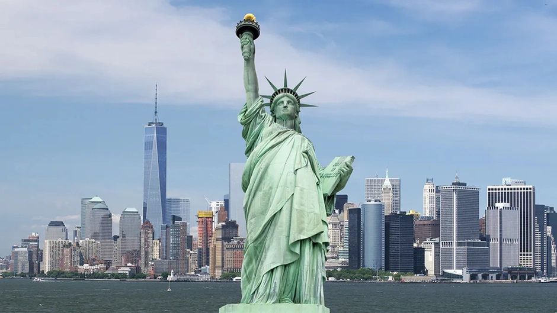
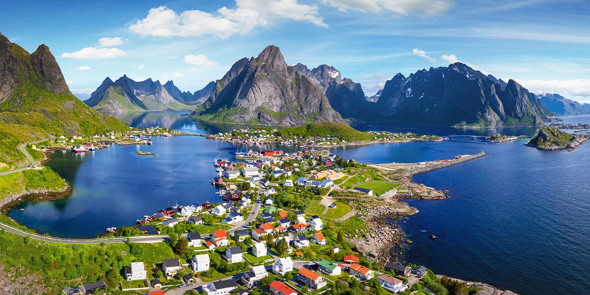
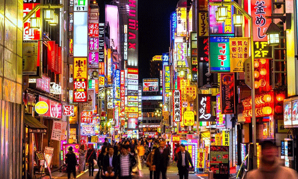
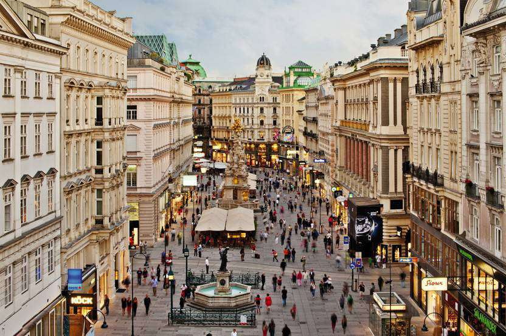
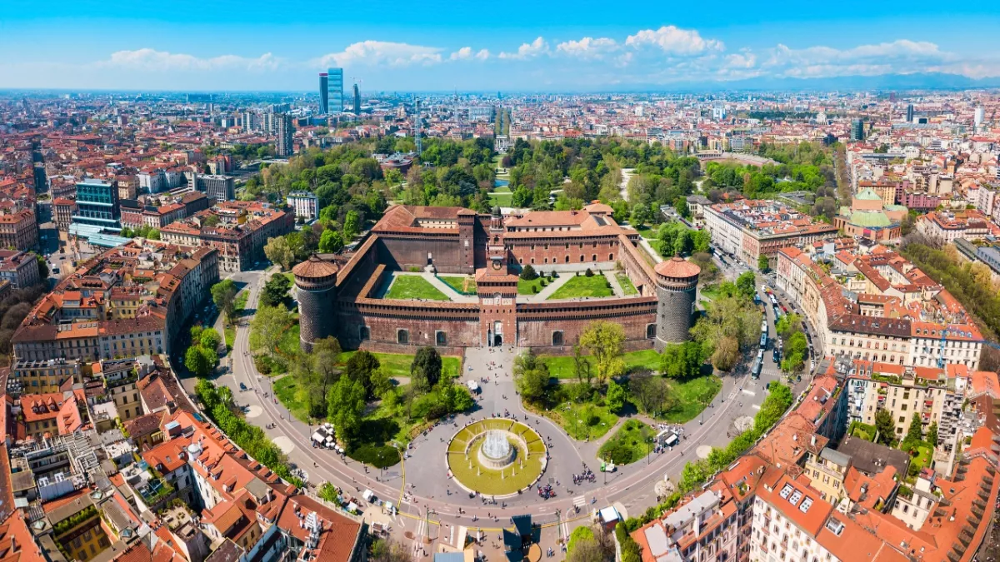

NewYork Hakkında Temel Bilgiler
New York, Amerika Birleşik Devletleri’nin kuzeydoğusunda yer alan büyülü bir eyalettir. İşte New York hakkında bazı temel bilgiler: Nüfus ve Eyalet Yapısı: New York, yaklaşık 20 milyonluk bir nüfusa sahip ve en kalabalık dördüncü eyalettir. Beş farklı bölgeden oluşur: The Bronx, Brooklyn, Manhattan, Queens ve Staten Island. New York City: Eyaletin en büyük şehri olan New York City, dünyanın en kalabalık kentlerinden biridir. Küresel bir kent olarak finans, kültür ve sanat alanlarında öne çıkar. Turistik Noktalar: Özgürlük Heykeli, Empire State Binası, Central Park, Times Meydanı, Broadway, Brooklyn Köprüsü gibi ünlü yerleri ziyaret edebilirsiniz. New York, tarih, kültür ve eğlence açısından zengin bir destinasyondur.
NewYork'da Gezilecek Yerler
New York, dünyanın en ünlü ve enerjik şehirlerinden biridir. İşte New York’ta gezilecek bazı önemli yerler: Times Meydanı (Times Square): New York’un kalbinde yer alan bu meydan, renkli reklam panoları, tiyatrolar ve restoranlarla ünlüdür. Özellikle gece ışıklarıyla büyüleyicidir. Central Park: Bu büyük yeşil alan, şehrin ortasında bir vaha gibidir. Yürüyüş yapabilir, bisiklete binebilir veya sadece doğanın tadını çıkarabilirsiniz. Empire State Binası: New York’un sembolü olan bu gökdelen, 1931 yılında inşa edilmiştir. Gözlem katından muhteşem manzaraları görebilirsiniz. Özgürlük Heykeli (Statue of Liberty): Özgürlük Heykeli, Manhattan’ın güneyindeki Liberty Adası’nda yer alır. Amerika’nın özgürlük sembolüdür. Brooklyn Köprüsü: Manhattan ile Brooklyn’i birbirine bağlayan bu tarihi köprü, yürüyüş ve bisiklet için harika bir seçenektir. Metropolitan Sanat Müzesi (The Met): Sanatseverler için zengin koleksiyonlarıyla ünlü olan bu müze, dünyanın en büyük sanat müzelerinden biridir. Broadway Tiyatroları: Broadway, dünyanın en ünlü tiyatro bölgesidir. Bir Broadway müzikalini izlemek unutulmaz bir deneyimdir. New York, kültürel çeşitliliği, tarihi zenginlikleri ve enerjisiyle her ziyaretçiyi büyüler.
Norveç Hakkında Temel Bilgiler
Norveç, İskandinav Yarımadası’nın batı kısmında yer alan bir ülkedir. İşte Norveç hakkında temel bilgiler: Resmi Adı: Norveç Krallığı (Norveççe-Bokmål: Kongeriket Norge; Norveççe-Nynorsk: Kongeriket Noreg) Başkent: Oslo Nüfus: Yaklaşık 5.4 milyon Para Birimi: Norveç kronu Resmi Dil: Norveççe Yüzölçümü: 385,199 km² Norveç, doğal güzellikleri, ekonomik refahı ve dünya mutluluk sıralamalarındaki başarısıyla tanınır. Fiyordları, dağları ve kuzey ışıklarıyla ünlüdür. Ayrıca düşük suç oranı ve güvenli yaşam koşullarıyla da bilinir.
Norveç'te Gezilecek Yerler
Norveç, doğal güzellikleri, tarihi zenginlikleri ve modern yaşam tarzıyla büyüleyici bir ülkedir. İşte Norveç’te gezilecek bazı önemli yerler: Oslo: Norveç’in başkenti ve en büyük şehri olan Oslo, tarihi ve kültürel zenginlikleriyle ünlüdür. Akershus Kalesi gibi tarihi yapıları ziyaret edebilirsiniz1. Lofoten Adaları: Bu adalar, yükselen sivri tepeleri, dingin gölleri ve balıkçı kasabalarıyla ünlüdür. Doğal güzellikleri ve balıkçılık kültürüyle etkileyicidir2. Geiranger: UNESCO Dünya Mirasları Listesi’nde yer alan Geiranger, 7 Kız Kardeşler Şelalesi ve muhteşem manzaralarıyla ünlüdür. Ayrıca fjordları ve doğal güzellikleriyle dikkat çeker3. Trolltunga ve Pulpit Rock: Trolltunga ve Pulpit Rock, dağcılık ve doğa yürüyüşü sevenler için harika rotalardır. Trolltunga, muhteşem manzaralarıyla ünlüdür. Norveç, doğa severler, macera arayanlar ve tarih meraklıları için eşsiz bir destinasyondur.
Tokyo Hakkında Temel Bilgiler
Tokyo, Japonya’nın başkenti ve en büyük şehridir. İşte Tokyo hakkında temel bilgiler: Nüfus: Tokyo, merkezinde 12 milyon insan barındıran, dünyanın en büyük metropollerinden birisidir. Tokyo bölgesinde ise 35 milyon insan yaşamaktadır. Ekonomi ve Kültür: Tokyo, Japonya’nın siyasi ve ekonomik merkezi olmasının yanı sıra Japonya İmparatorluğu’nun ve ulusal hükümetin merkezidir. Tarihi: Eski adı “Edo” olan Tokyo, önceleri küçük bir balıkçı kasabası iken şimdilerde doğunun başkenti olmuştur. Tokyo, modern yaşam tarzı, tarihi zenginlikleri ve enerjisiyle her ziyaretçiyi büyüler.
Tokyo'da Gezilecek Yerler
Tokyo, Japonya’nın başkenti ve dünyanın en büyük metropollerinden biri. Burası geleneksel ve modernin eşsiz bir karışımını sunuyor. İşte Tokyo’da gezilecek bazı önemli yerler: Meiji Tapınağı: Yoyogi Park içinde yer alan bu tapınak, İmparator Meiji ve İmparatoriçe Shōken’e adanmış. Huzur dolu atmosferiyle ziyaretçileri büyülüyor. Senso-ji Tapınağı: Tokyo’nun en eski tapınağıdır. Asakusa bölgesinde bulunur ve renkli kapılarıyla ünlüdür. Tokyo Kulesi (Tokyo Skytree): 634 metre yüksekliğiyle dünyanın en yüksek kulesidir. Muhteşem manzarası için mutlaka ziyaret edilmeli. Tokyo İmparatorluk Sarayı: İmparatorluk ailesinin yaşadığı yer. Bahçesini gezmek bile keyifli. Ginza Bölgesi: Lüks alışveriş, restoranlar ve kafelerle ünlüdür. Shibuya: Ünlü Shibuya Scramble Crossing yaya geçidi burada bulunur. Gençlerin ve modanın merkezi. Ueno Parkı: Müzeler, göletler ve güzel bahçelerle dolu büyük bir park. Yoyogi Parkı: Geniş yeşil alanı ve piknik yapma imkanı sunar. Tokyo Ulusal Müzesi: Japon sanatı ve kültürü hakkında bilgi edinmek için ideal. Akihabara: Elektronik ve anime meraklılarının cenneti. Bu sadece bir başlangıç! Tokyo, keşfedilecek daha birçok ilginç noktaya sahip.
Viyana Hakkında Temel Bilgiler
Viyana, Avusturya’nın başkenti ve en büyük şehri olarak hem tarihi hem de kültürel açıdan oldukça zengin bir destinasyon. İşte Viyana hakkında temel bilgiler: Tarih ve Kültür: Viyana, Avrupa’nın en önemli kültür, politika ve sanat merkezlerinden biri olmuştur. Tarihi boyunca Habsburg hanedanlığına ev sahipliği yapmış ve bu dönemden kalma sarayları, katedralleri ve tarihi binalarıyla büyüleyici bir atmosfere sahiptir. Müzeler ve Sanat Galerileri: Viyana, sanatseverler için bir cennettir. Doğa Tarihi Müzesi, Sanat Tarihi Müzesi, Albertina Müzesi gibi ünlü müzeler ve Museumsquartier adlı meydan, sanata ve tarihe meraklı olanlar için ideal ziyaret noktalarıdır. Ünlü Mekânlar: Viyana’nın simgesi olan Aziz Stefan Katedrali ve Karl Kilisesi, hem dini yapıları hem de ihtişamlı görünümleriyle gezginlerin ilgisini çeker. Schönbrunn Sarayı ise hala hanedanlığın izlerini taşıyan önemli bir turistik ve tarihi yapıdır. Alışveriş ve Lezzet Durakları: Viyana, alışveriş yapmak ve lezzetleri denemek isteyenler için ideal. Karntner Caddesi, Mariahilfer Caddesi ve Graben Caddesi gibi popüler caddeler, keyifli vakit geçirebileceğiniz noktalardır. Ayrıca Viyana’nın meşhur tatlıları ve enfes şinitzeli de mutlaka tadılmalı! İdeal Ziyaret Zamanı: Viyana’yı ziyaret etmek için Mayıs-Eylül arası dönem en uygun zaman. Bu aylarda şehir daha canlı, festivaller ve etkinlikler daha sık düzenlenir.
Viyana'da Gezilecek Yerler
Viyana, Avusturya’nın başkenti ve Orta Avrupa’nın en güzel ve tarihi zenginliklere sahip şehirlerinden biridir. Tuna Nehri’nin kıyısında yer alması ve görkemli yapılara ev sahipliği yapmasıyla ünlüdür. İşte Viyana’da gezilecek bazı önemli yerler: Hofburg Sarayı: Saraylar şehri Viyana’nın en ihtişamlı tarihi yapısıdır. Tam 240 dönümlük bir arazi üzerine inşa edilen sarayda 18 farklı bina, şapeller, kiliseler, avlular ve 2.600 oda bulunur. UNESCO Dünya Mirasları Listesi’nde yer alır1. Schönbrunn Sarayı: Avusturya’nın en önemli saraylarından biridir. 1.441 odasıyla büyüleyici bir tarih ve mimariye sahiptir. Bahçesi de mutlaka gezilmelidir. Sanat Tarihi Müzesi (Kunsthistorisches Museum): Sanatseverler için vazgeçilmez bir nokta. Eşsiz koleksiyonları ve görkemli binasıyla ünlüdür. Belvedere Sarayı: Barok tarzıyla dikkat çeken bu saray, güzel bahçeleri ve içindeki sanat eserleriyle ziyaretçilerini büyüler. Viyana Opera Binası (Wiener Staatsoper): Dünyanın en önemli opera binalarından biridir. Hem iç mekanı hem de dış cephesi muhteşemdir. Aziz Stefan Katedrali (St. Stephen’s Cathedral): Gotik tarzıyla ünlü olan bu katedral, Viyana’nın sembollerinden biridir. Prater Eğlence Parkı: Dönmedolabıyla ünlü Prater, eğlence ve nostalji dolu bir deneyim sunar. Albertina Müzesi: Sanat ve kültür meraklıları için ideal bir nokta. Eşsiz resim koleksiyonlarına ev sahipliği yapar. Ringstrasse: Bu ünlü cadde boyunca yürüyerek Viyana’nın tarihi ve modern yapılarını görebilirsiniz. Viyana Müzeler Bölgesi: Museumsquartier adıyla da bilinen bu bölge, birçok müze, galeri ve sanat etkinliğiyle ünlüdür.
Milano Hakkında Temel Bilgiler
Milano, İtalya’nın kuzeyinde yer alan ve hem tarihi hem de modern dünyayı bir arada soluyabileceğiniz bir şehir. İşte Milano hakkında temel bilgiler: Modanın Kalbi: Milano, moda dünyasının merkezlerinden biri olarak ün kazanmıştır. Milano Moda Haftası, dünyaca ünlü tasarımcıların koleksiyonlarını sergilediği önemli bir etkinliktir. Sanat ve Mimarlık: Şehir, birbirinden heybetli yapılarıyla dikkat çeker. En bilineni, dünyanın en büyük Gotik tarzdaki katedrali olan Duomo di Milano’dur. Ayrıca Galleria Vittorio Emanuele II adlı alışveriş merkezi ve La Scala opera binası da görülmeye değerdir. Ekonomik Güç: Milano, İtalya’nın en zengin ve gelişmiş ikinci büyük şehridir. Lobardiyalı bankerlerin etkisiyle ekonomik faaliyetlerde lider konumdadır. Sanayi, endüstri, ulaşım ve daha birçok alanda önemli bir merkezdir. Futbol Tutkusu: A.C. Milan ve Inter Milan gibi büyük futbol kulüplerine ev sahipliği yapar. Futbolseverler için önemli bir destinasyondur. İklim: Milano, nemli subtropikal bir iklime sahiptir. Yılın her döneminde ziyaret edilebilir, ancak bazı kış akşamlarında hava sıcaklığı 0’ın altına düşebilir. Yaz aylarında ise sıcaklık ortalama 35 dereceye kadar çıkabilir.
Milano'da Gezilecek Yerler
Milano, İtalya’nın moda, sanat ve tarihle iç içe geçmiş bir şehri. İşte Milano’da gezilecek bazı önemli yerler: Duomo di Milano (Milano Katedrali): Gotik tarzıyla ünlü olan bu katedral, şehrin sembolüdür. Tepesine çıkarak muhteşem bir manzara izleyebilirsiniz1. Galleria Vittorio Emanuele II Alışveriş Merkezi: Tarihi bir pasaj olan Galleria, lüks mağazaları, kafeleri ve tavanındaki mozaikleriyle ünlüdür. Bir kahve molası vermek için ideal bir nokta1. La Scala (Teatro alla Scala): Dünyanın en ünlü opera binalarından biridir. Eğer şansınız varsa bir opera veya konser izlemeyi düşünebilirsiniz1. Sforzesco Şatosu: Leonardo da Vinci’nin eserlerini görebileceğiniz bu tarihi kale, büyüleyici bir atmosfere sahiptir2. Brera Bölgesi: Sanatseverler için ideal bir nokta. Brera Sanat Galerisi ve dar sokaklarıyla ünlüdür3. Navigli Bölgesi: Kanalları ve renkli evleriyle ünlüdür. Akşamüstü burada yürümek keyiflidir2. Santa Maria delle Grazie Kilisesi (Son Yemek Freski): Leonardo da Vinci’nin ünlü “Son Akşam Yemeği” freskinin bulunduğu kilise. Rezervasyon yapmadan önce ziyaret etmeyi unutmayın3. Cimitero Monumentale: Bu büyük mezarlık, sanatsal mezar taşları ve heykelleriyle dikkat çeker. Sanat ve tarih meraklıları için ilginç bir nokta